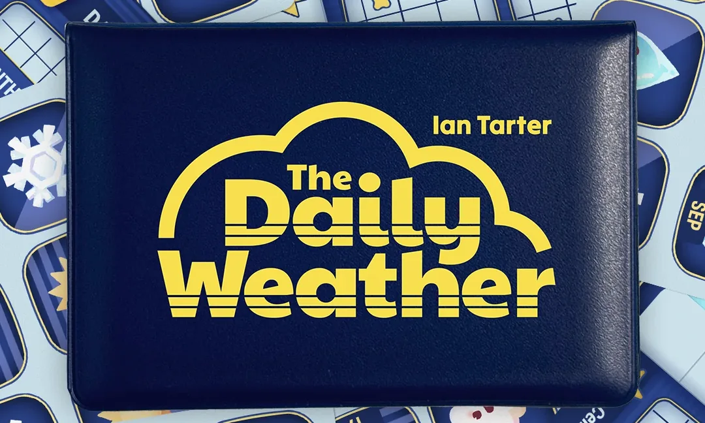
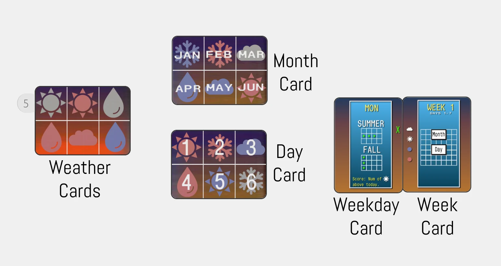
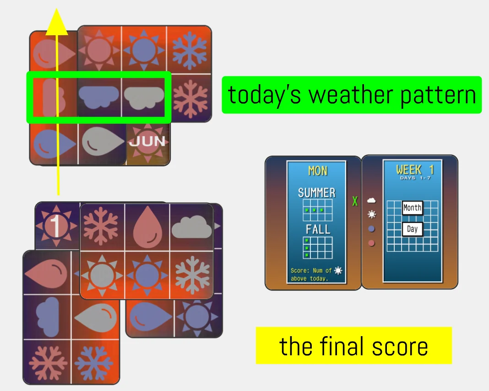

A new puzzle every day
I designed a pocket-sized solo card game that gives you a different puzzle every day, then through months of refinement, it was picked up for publication
- Role
- Creator
- Methods
- Competitive research, solo testing, public playtesting, feedback rounds
- Made for
- Button Shy's 9 Cards Per Game design contest
- Outcome
- Top three in the contest, then published; Kickstarter raised over $29,000
TL;DR
- The question
- Could a deck of 18 cards replicate the magic of Wordle by isolating what made it special?
- What I did
- Designed it for Button Shy's 9-card contest and extensively playtested it
- What came out of it
- Top three in the contest, then published by Button Shy. The Kickstarter raised over $29,000, and it's available for purchase now.

- Learn from what worksA wooden puzzle-a-day, Wordle, and Button Shy's weekly solo challenges
- Define project goalsEasy to fit into daily routine, either win/loss, shareable, and shows the current date
- Design, refine, playI went through several ideas and picked the best ones, with help from fellow playtesters
- Pitch itI created a rules document and video highlighting the compelling parts of the game, and sent it in.
The problem
I love Wordle. It's such an easy game to get into, and it was fun to try every day to see how well I would do on the next day, and I loved being surprised by whatever came up next. However, there were several ways I wanted to improve it. For one, getting it in a physical form felt more healthy for a morning routine, since phones have many other temptations that prevent productivity in the morning. In addition, it's difficult to talk about the Wordle solution, since you might end up spoiling it by accident.
In essence, could a small deck of cards give everyone a new puzzle each day that's still worth sharing?
My approach
Start from what already works. The idea came from a wooden puzzle-a-day in my college's economics lobby, where you cover every date except today's. I also knew that Button Shy had extensive experience with running challenges, so they would be the perfect company to facilitate the sort of community I was hoping would emerge from the game.
Write the goals down first. Since each day can have a unique setup even during the same day due to how your starting deck is shuffled and flipped, solutions can be shared without ruining it for other players. In addition, the puzzle changes every day, week, month and season, so there's always a reason to come back. And like Wordle, a game should be short, so a solve used just five cards.

Tune the difficulty by playing. Since I wanted a binary win/loss, my initial thought was just covering up everything except the day and the month. Since that was too simple, I added the second goal of displaying a weather pattern of either colors or symbols.

What players changed
I shared the prototype with Button Shy's Discord community, and two suggestions from designer Marceline Leiman (Dino Racers, High Tide) changed the game most. First, my theme borrowed the look of the Aztec calendar without respecting the culture behind it, so I switched to a late-80s aesthetic weather report, which was fitting for something you put on every day. Second, to encourage competition and replayability within a day, add a score. I wanted something that was easy to measure for minimum friction, and unique each day to feel different.
Then I started posting my solution every day. Other players joined in, with two especially dedicated players who kept playing the prototype for months.
Outcome
The game made the top three in the contest, and Button Shy owner Jason Tagmire offered to publish it. Their team then playtested it widely, being the most playtested game from Button Shy. They made the game more accessible by reducing the difficulty and improving the layout, with art by Manon Mergnat. Its Kickstarter raised over $29,000 from more than 1,800 backers, and it's available to purchase now at buttonshygames.com.
“The Daily Weather is going to be a beloved addition to your collection.”
What’s Eric Playing?
“If you’re a fan of spatial puzzles, this one is a must-have in my opinion.”
Yogi Bear and Delaware
The biggest lesson was that constraints breed productivity. Before this, I often stalled after playtesting because I couldn't tell which potential change was better. The contest's nine-card limit and my own written goals gave me a way to easily judge each one.